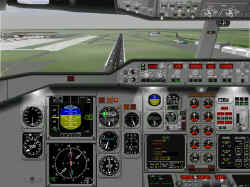

Panel
A310 für den FS98 von Andy Jaros und Paul Golding
getestet von Jürgen Falkenhain
Beim Stöbern über meine verschiedenen Homepages stolperte ich auch
wie fast jeden Tag bei simflight.de rein. Da das Thema FS2000 überall in
aller Munde ist, war ich schon gewillt, den Bericht über das verfügbare
A310-Panel zu "übersehen", da ich Systemseitig noch nicht
gewillt bin, auf den FS2000 umzusteigen.
Tja, und da !! Es gibt ein Zusatzfile, das dieses Panel doch auch
kompatibel zum FS98 macht. Also, schwupp runtergeladen,
Installationshinweise gelesen, die auch für einen Flusisten mit weniger
guten Englischkenntnissen recht problemlos übersetzt werden können.
Die Installation selbst läuft problemlos ab, vorausgesetzt, der Patch
für den FS98 sowie der Converter ist installiert, was aber ohnehin
Voraussetzung für andere Addons Pflicht ist. In dieser Installroutine ist
auch eine passende A310 von Kenya Airways mit dabei, deren Cockpit gleich
auf besagtes Panel zugreift. Also - den FS98 gestartet, Aircraft
aufgerufen und - erstmal tief Luft geholt. Das Panel, obwohl schon auf den
Screenshot begutachtet, ist echt eine Wucht. Nein - man glaubt sich
diesmal wirklich in einer A310 zu befinden. Also, kurz die Motoren
angeworfen und ?
 Nun,
erst mal doch in die sehr gut illustrierte Dokumentation im html-format,
die man am Besten vorher ausgedruckt hat, einen Blick reingeworfen, um
darin zu lesen, dass erst mal die APU gestartet werden muss, den
Hauptschalter auf "ON" zu stellen ist, etc. Also ein richtiges
Start-procedere. Top !! Hier kommt Airliner Feeling auf.
Nun,
erst mal doch in die sehr gut illustrierte Dokumentation im html-format,
die man am Besten vorher ausgedruckt hat, einen Blick reingeworfen, um
darin zu lesen, dass erst mal die APU gestartet werden muss, den
Hauptschalter auf "ON" zu stellen ist, etc. Also ein richtiges
Start-procedere. Top !! Hier kommt Airliner Feeling auf.
Dann Taxi Clearance geholt und schon geht es in Richtung Startbahn 07
in Stuttgart, meiner Homebase. Auch wenn die Kenya dort wohl nie landen
wird. Kurz bremsen, weil da die landende A321 der LH Vorrang hat, hey, was
war das ?? Nochmals gebremst - ich halte es nicht für möglich: Brems-Sound,
Junge, die Bremsen wirken nicht nur, nein, man das hört das typische
niederfrequente Quietschen der Bremsen. Erst mal durchatmen. Mir fehlen
die Worte. Flaps auf Takeoff-Stellung fahren, Nav´s sind eingestellt, und
schon kommt die Clearance Takeoff nach vollzogenem Line-up und das 'Go'.
Den Vogel auf 160 kts beschleunigt und Vr erreicht, Yoke gezogen ( huch,
das Ding reagiert doch nicht wie Cessna, kein Wunder bei dem Gewicht) aber
die schiere Gewalt der PW4060-Triebwerke heben einen regelrecht gen
Himmel. Autopilot aktiviert, aber zu früh, da wir die dementsprechende
Höhe noch nicht erreicht habe. Also wieder raus aus dem AP und von Hand
weiterfliegen. Hup, schrei, kreisch, das Warnsignal für das Deaktivieren
des AP ist unüberhörbar und verhallt auch so lange nicht mehr, bis ich
doch entnervt den AP wieder reinschiebe. Die Funktionen sind einfach so,
wie man es von einem AP erwartet. Alle Schalters und Nubsis, sprich
Knöpfe sind dort, wo man sie vermutet.
 Die
Instrumente sind sauber und glasklar zu lesen. Im 2D als auch 3D-Modus.
Kein Grund zur Klage. Das Nav-Display ist dem Original vortrefflich
nachgebildet. Auch Features wie Autobrakes (die sich nur bei ausgefahrenem
Fahrwerk aktivieren lassen) oder oder oder....Auf alle Anzeigen einzeln
einzugehen, würde den Rahmen hier etwas sprengen, denke ich. Fazit ist
auf alle Fälle, dass dieses Panel einfach genial ist. Ein kleiner Wermutstropfen
bleibt: die Verstellung der QRG´s (= Frequenzen) für die beiden Nav´s
befindet sich ganz unten am Bildschirmrand und sind etwas schwer mit der
Maus zu treffen. Aber damit kann man leben. Ich zumindest.
Die
Instrumente sind sauber und glasklar zu lesen. Im 2D als auch 3D-Modus.
Kein Grund zur Klage. Das Nav-Display ist dem Original vortrefflich
nachgebildet. Auch Features wie Autobrakes (die sich nur bei ausgefahrenem
Fahrwerk aktivieren lassen) oder oder oder....Auf alle Anzeigen einzeln
einzugehen, würde den Rahmen hier etwas sprengen, denke ich. Fazit ist
auf alle Fälle, dass dieses Panel einfach genial ist. Ein kleiner Wermutstropfen
bleibt: die Verstellung der QRG´s (= Frequenzen) für die beiden Nav´s
befindet sich ganz unten am Bildschirmrand und sind etwas schwer mit der
Maus zu treffen. Aber damit kann man leben. Ich zumindest.
Anzumerken gilt nochmal eines: dieses Panel ist sowohl für den FS2000
als auch für den Fs98 zu haben. Einer feiner Schachzug !! Prädikat:
besonders empfehlenswert.
Jürgen Falkenhain
falke@bluewin.de
24.Dez.1999


{kind=link}
{kind=link}